ClinicusMed · Tálamo, Hipotálamo, Epitálamo, Subtálamo e Sistema Ventricular · Ficha Padronizada
O Diencéfalo é a região do encéfalo situada entre o tronco encefálico e os hemisférios cerebrais, limitada lateralmente pela cápsula interna. Na linha média encontra-se o III Ventrículo, que o separa em 2 regiões simétricas. Divide-se em 4 zonas bem definidas: Tálamo, Hipotálamo, Epitálamo e Subtálamo. Essa ficha usa imagens reais de dissecação e diagramas da cátedra, com ênfase visual em cada uma das 4 zonas e no sistema ventricular associado.
Ao final dessa ficha, você será capaz de localizar o Diencéfalo entre o telencéfalo e o mesencéfalo, descrever suas 4 zonas e as 4 superfícies que o delimitam, identificar os principais núcleos do Tálamo e suas 3 categorias funcionais, reconhecer as funções do Hipotálamo e do Epitálamo, e descrever o sistema ventricular (ventrículos laterais, 3º e 4º ventrículo) e a circulação do líquido cefalorraquídeo.
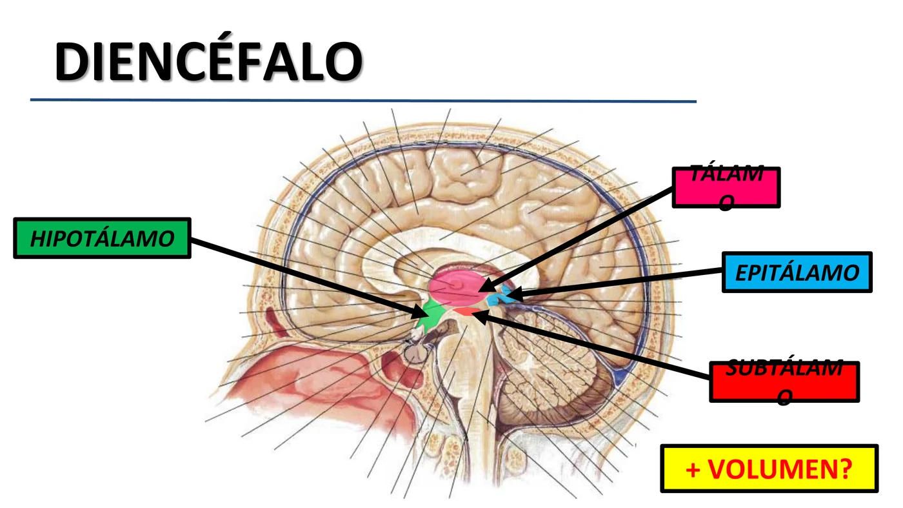
| Divisão | Subdivisões |
|---|---|
| Prosencéfalo | Telencéfalo + Diencéfalo |
| Mesencéfalo | (sem subdivisões — pedúnculos cerebrais, colículos) |
| Rombencéfalo | Ponte + Cerebelo · Bulbo Raquídeo |
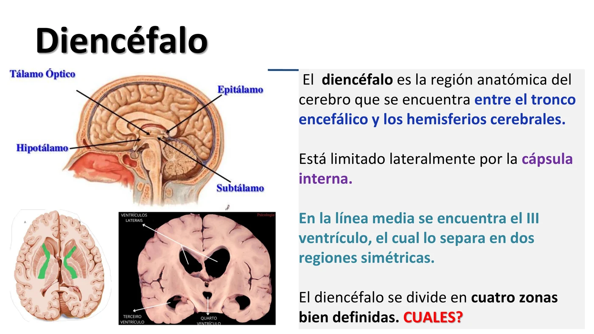
| Zona | Localização |
|---|---|
| Tálamo | Porção mais volumosa, na linha média superior |
| Hipotálamo | Abaixo do tálamo, formando o assoalho do III ventrículo |
| Epitálamo | Região mais caudal e posterior |
| Subtálamo | Abaixo do tálamo, entre ele e o mesencéfalo |
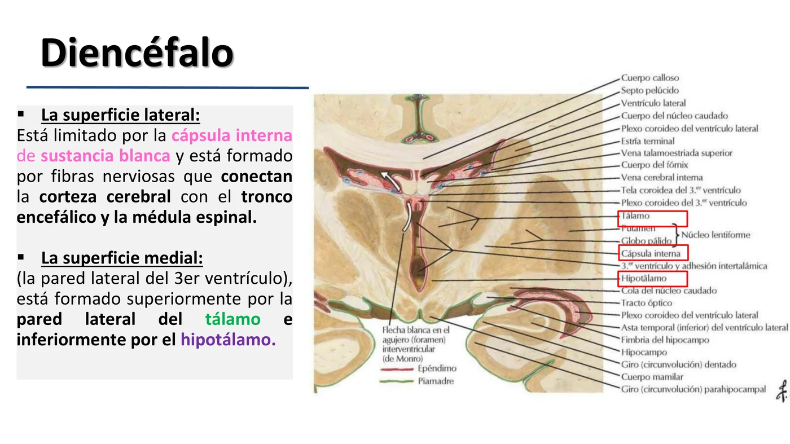
| Superfície | Característica |
|---|---|
| Superior | Oculta pelo fórnix; a parede verdadeira é o teto do III ventrículo, coberto por plexo coroideo (piamadre) |
| Inferior | Formada por estruturas hipotalâmicas |
| Lateral | Limitada pela cápsula interna — fibras que conectam o córtex cerebral com o tronco encefálico e a medula espinal |
| Medial | Parede lateral do III ventrículo — formada superiormente pela parede lateral do tálamo e inferiormente pelo hipotálamo |
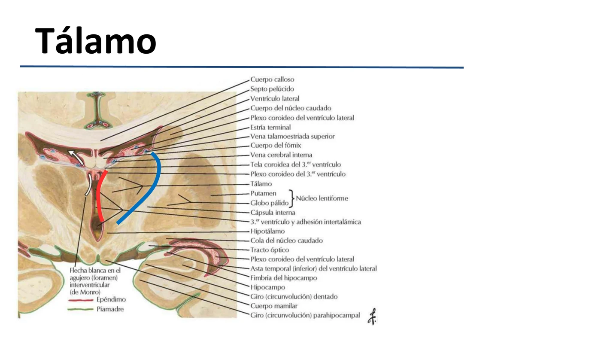
O Tálamo tem 2 extremos:
| Extremo | Relação |
|---|---|
| Anterior | Mais próximo do tálamo oposto — separados pelo Forame Interventricular (de Monro) |
| Posterior | Relacionado com os colículos do mesencéfalo |
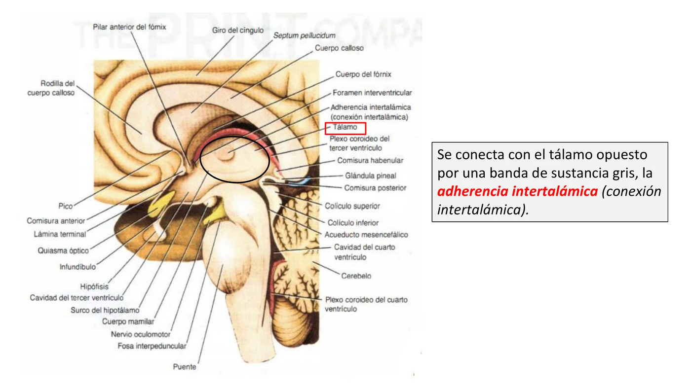
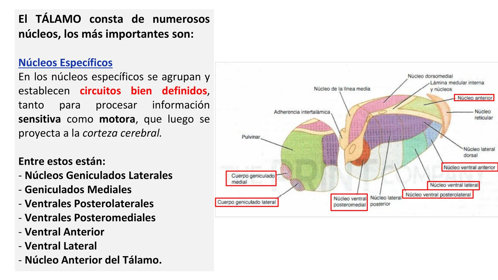
| Categoria | Característica | Núcleos |
|---|---|---|
| Específicos | Circuitos bem definidos para processar informação sensitiva e motora, projetada à córtex cerebral | Geniculados Laterais, Geniculados Mediais, Ventral Posterolateral, Ventral Posteromedial, Ventral Anterior, Ventral Lateral, Núcleo Anterior |
| Associação | Conexões recíprocas com áreas de associação cortical | Pulvinar, Lateral Posterior, Lateral Dorsal, Dorsomediano |
| Inespecíficos | Não incluem claramente vias sensitivas/motoras; amplas conexões com outros núcleos | Laminares, Reticulares, Núcleos da linha média do tálamo |
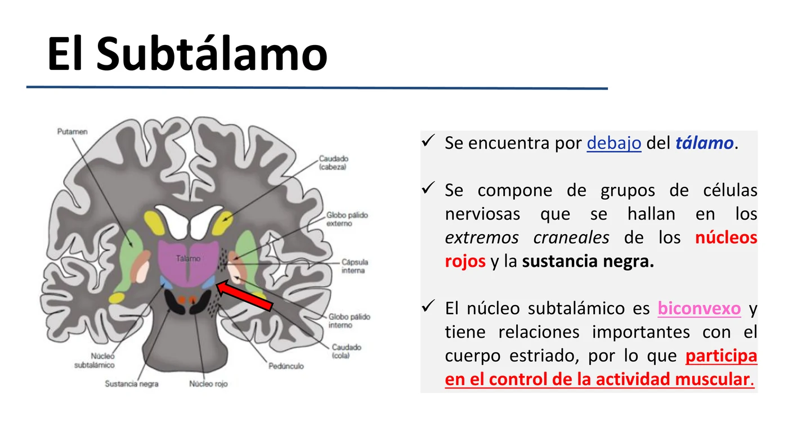
Encontra-se abaixo do tálamo. Composto por grupos de células nervosas nos extremos craniais do núcleo rojo e da substância negra. O Núcleo Subtalâmico é biconvexo e tem relações importantes com o corpo estriado, participando do controle da atividade muscular.
| Tipo | Núcleo |
|---|---|
| Núcleo Próprio | Núcleo Subtalâmico |
| Núcleos "Emprestados" (de outras zonas, mas ocupam parcialmente o Subtálamo) | Núcleo Rojo e Núcleo Negro (Substância Negra) — ambos pertencentes ao pedúnculo cerebral |
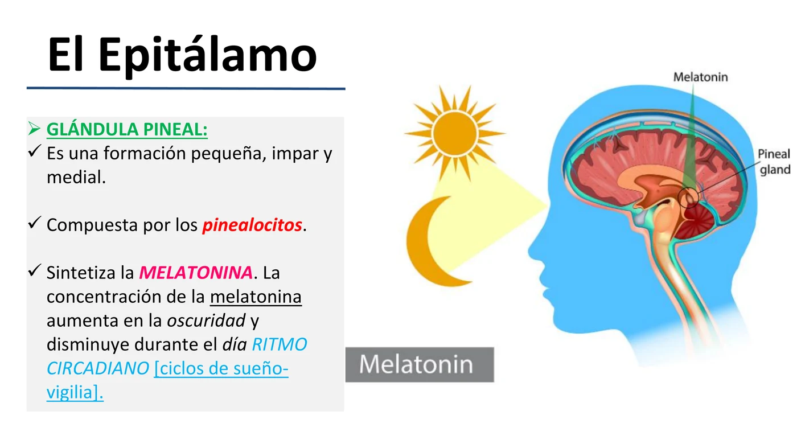
Porção relativamente pequena do diencéfalo, localizada na região mais caudal e posterior. Composto principalmente pela Glândula Pineal e pela Habénula (comissura habenular).
| Estrutura | Detalhe |
|---|---|
| Glândula Pineal | Formação pequena, ímpar e medial; composta por pinealócitos |
| Função | Sintetiza Melatonina — concentração aumenta na escuridão e diminui durante o dia, regulando o ritmo circadiano (ciclo sono-vigília) |
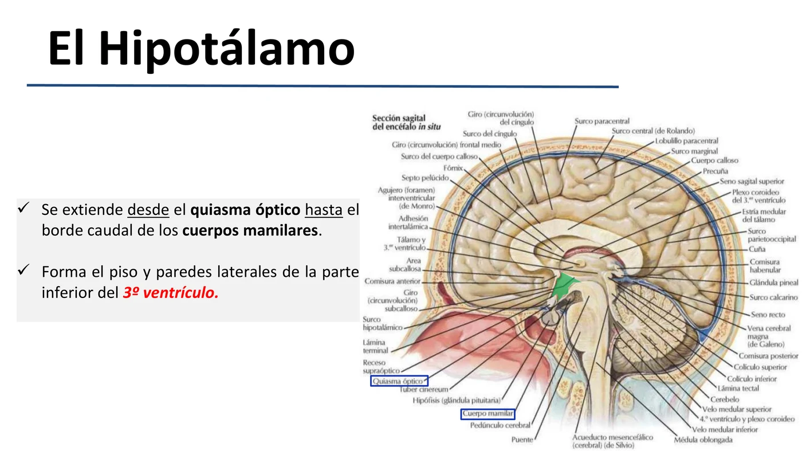
Estende-se desde o quiasma óptico até o borde caudal dos corpos mamilares. Forma o assoalho e as paredes laterais da parte inferior do III ventrículo. Situado estrategicamente perto do sistema límbico, tálamo, tratos ascendentes/descendentes e a hipófise. Apesar do tamanho diminuto, é essencial para a vida.
| Divisão | Característica |
|---|---|
| Hipotálamo Medial | Concentra a maior quantidade de núcleos; mais somas e menos fibras |
| Hipotálamo Lateral | Pobre em somas neuronais; rico em fibras |
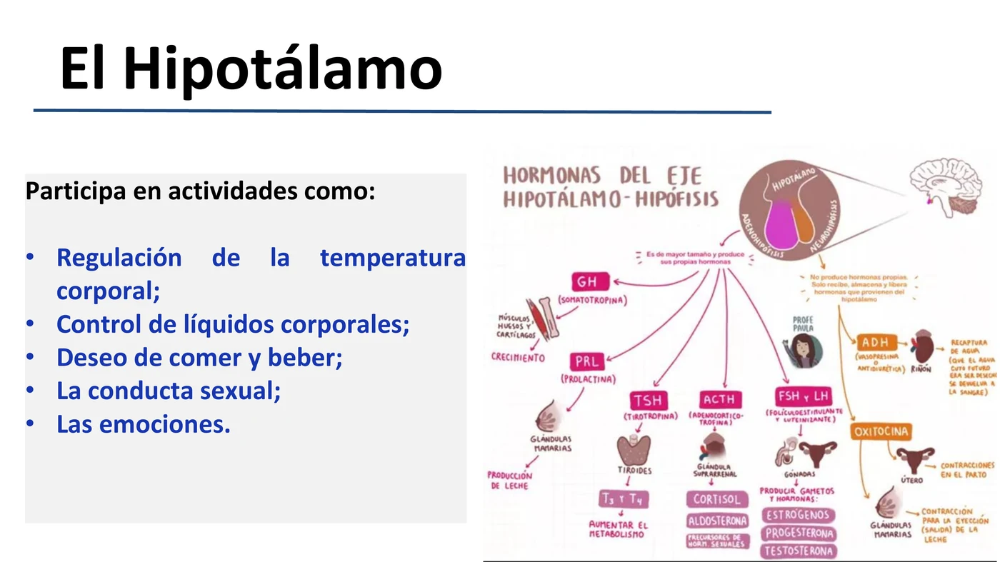
Visto por baixo, o hipotálamo se relaciona, de anterior pra posterior, com: a) Quiasma Óptico; b) Túber Cinéreo e Infundíbulo; c) Corpos Mamilares.
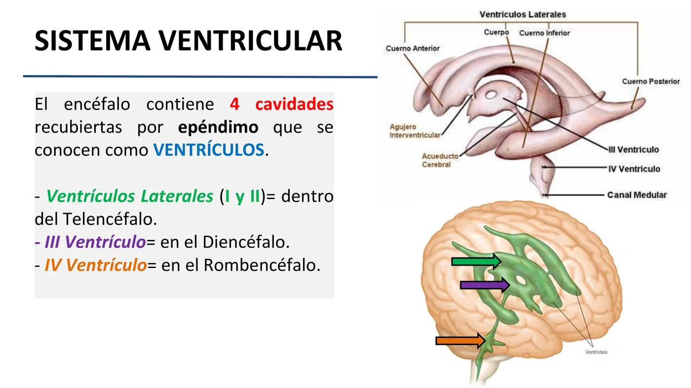
O encéfalo contém 4 cavidades revestidas por epêndimo — os Ventrículos.
| Ventrículo | Localização |
|---|---|
| Ventrículos Laterais (I e II) | Dentro do Telencéfalo |
| III Ventrículo | No Diencéfalo |
| IV Ventrículo | No Rombencéfalo |
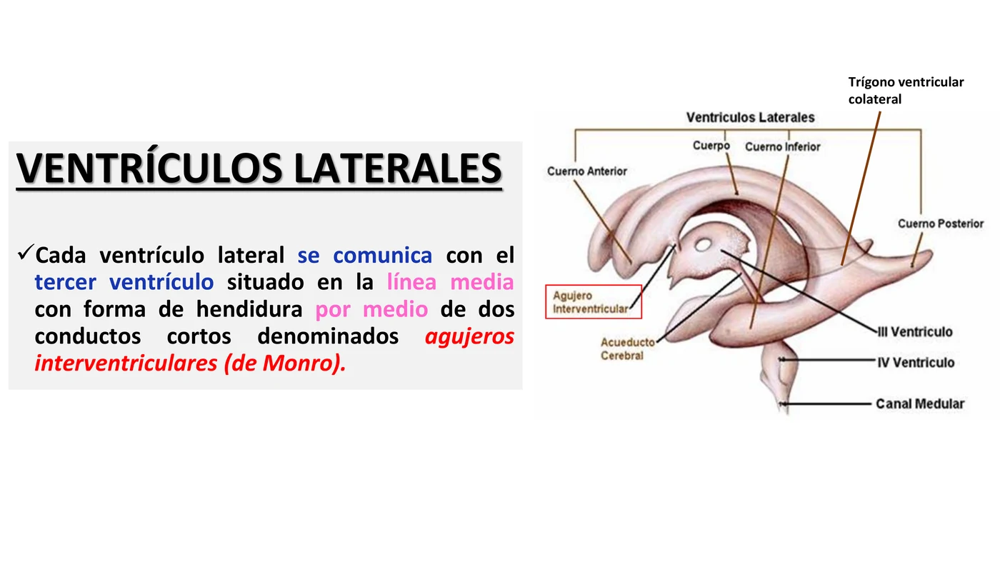
Cavidades revestidas de epêndimo dos hemisférios cerebrais, em forma de arco, ocupadas por LCR. O par de ventrículos laterais se divide em 5 partes:
| Nº | Parte |
|---|---|
| 1 | Asta Anterior (frontal) |
| 2 | Corpo Ventricular |
| 3 | Trígono Colateral (atrium) |
| 4 | Asta Inferior (temporal) |
| 5 | Asta Posterior (occipital) |
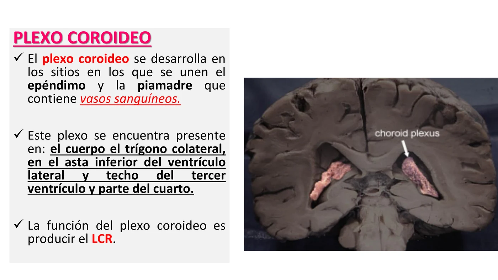
Desenvolve-se nos locais onde se unem o epêndimo e a piamadre que contém vasos sanguíneos. Está presente no: corpo e trígono colateral, asta inferior do ventrículo lateral, teto do III ventrículo e parte do IV.
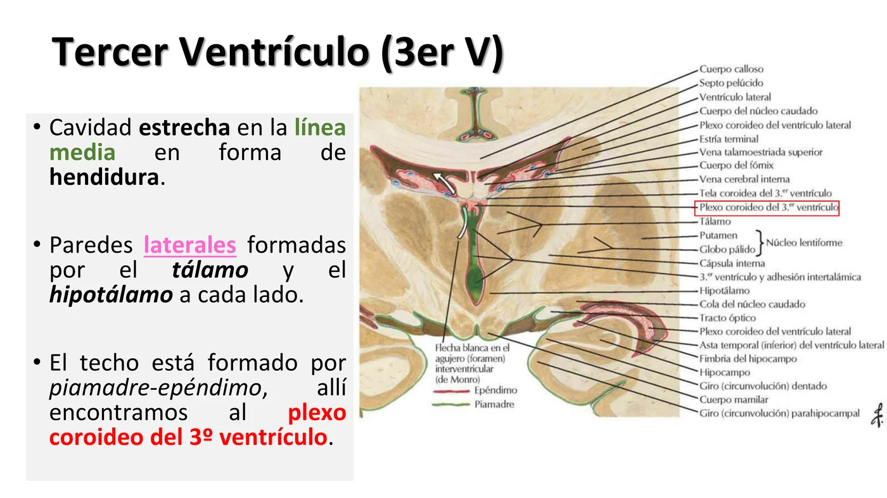
Cavidade estreita na linha média, em forma de fenda. Paredes laterais formadas pelo tálamo e pelo hipotálamo, de cada lado. O teto é formado por piamadre-epêndimo, onde se encontra o plexo coroideo do III ventrículo.
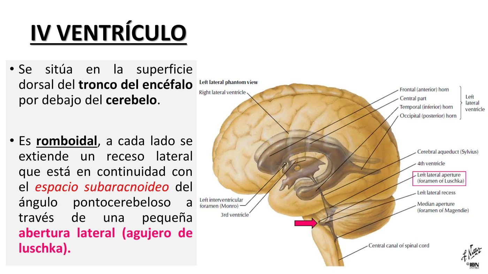
Situa-se na superfície dorsal do tronco encefálico, abaixo do cerebelo. É romboidal — de cada lado se estende um recesso lateral, em continuidade com o espaço subaracnoideo do ângulo pontocerebelar através de uma pequena abertura lateral: o Forame de Luschka.
| Propriedade | Detalhe |
|---|---|
| Volume | ≈ 150 ml |
| Aspecto | Transparente e incolor |
| Composição | Glicose, proteínas e poucas células (linfócitos) |
| Função | Amortecedor entre o SNC e os ossos que o rodeiam — protege de traumatismos |
| Produção | Plexos Coroideos — localizados nos ventrículos laterais, III e IV ventrículos |
O LCR circula dos ventrículos laterais → III ventrículo (via forames de Monro) → IV ventrículo (via aqueduto cerebral) → espaço subaracnoideo (via aberturas do IV ventrículo) → absorção.
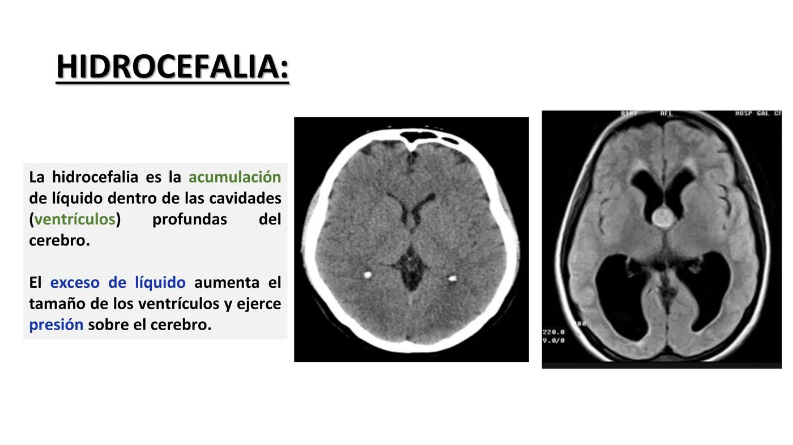
| Aspecto | Frequência |
|---|---|
| As 4 zonas do Diencéfalo e suas funções | 🔥🔥🔥🔥🔥 |
| Núcleos do Tálamo (específicos × associação × inespecíficos) | 🔥🔥🔥🔥 |
| Função da Glândula Pineal (melatonina/ritmo circadiano) | 🔥🔥🔥🔥🔥 |
| Divisão e localização dos 4 ventrículos | 🔥🔥🔥🔥🔥 |
| Comunicações entre ventrículos (forames de Monro, aqueduto cerebral) | 🔥🔥🔥🔥 |
| Função do Hipotálamo e sua relação com a hipófise | 🔥🔥🔥🔥 |
| Hidrocefalia — fisiopatologia básica | 🔥🔥🔥 |
O Tálamo é a principal estação de retransmissão (relay) de todas as vias sensitivas rumo ao córtex (exceto olfato) — uma lesão talâmica (clássicamente por AVC da artéria talamogeniculada) causa a Síndrome Talâmica de Dejerine-Roussy.
Como o Hipotálamo controla o sistema nervoso autônomo e o eixo endócrino, lesões (tumores, trauma, cirurgia de hipófise) podem causar distúrbios amplos e variados.
| Estrutura/Núcleo afetado | Manifestação clássica |
|---|---|
| Núcleos supraóptico/paraventricular (ADH) | Diabetes Insípido Central (poliúria, polidipsia) |
| Centro da saciedade (hipotálamo ventromedial) | Hiperfagia e obesidade |
| Centro termorregulador | Disfunção na regulação da temperatura corporal |
| Eixo hipotálamo-hipofisário | Disfunções hormonais múltiplas (tireoide, suprarrenal, gônadas) |
A obstrução da circulação do LCR em qualquer ponto do trajeto (forames de Monro, aqueduto cerebral, forames do IV ventrículo) causa acúmulo de líquido a montante da obstrução — hidrocefalia obstrutiva (não comunicante). Já um defeito na absorção (vilosidades aracnoideas) causa hidrocefalia comunicante.
16 imagens — diagramas da cátedra e uma foto real de peça (plexo coroideo) — cobrindo as 4 zonas do Diencéfalo e o Sistema Ventricular. Toque em qualquer imagem pra abrir em tamanho grande (🔍 zoom).
24 rodadas de perguntas rápidas sobre as 4 zonas do Diencéfalo, núcleos do Tálamo, Hipotálamo e o Sistema Ventricular, 1 por vez, 60 segundos pra você responder mentalmente. A pergunta muda sozinha quando o tempo acaba (ou clica em "Já sei, próxima"). No final, você vê o gabarito completo de tudo.
O sistema guarda, no seu navegador, quais cards você já sabe bem e quais precisam voltar mais cedo — cada vez que você avalia um card, ele recalcula quando ele deve voltar.
15 questões cobrindo as 4 zonas do Diencéfalo, núcleos do Tálamo, funções do Hipotálamo/Epitálamo e o Sistema Ventricular. Escolhe uma alternativa, depois clica em "Ver comentário completo".